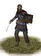
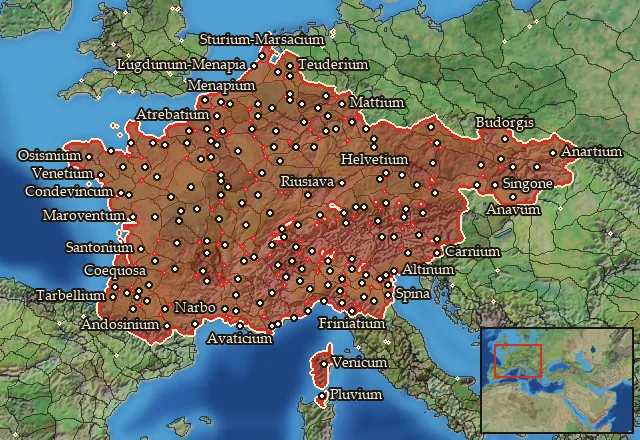

RTR: Imperium Surrectum
RTR: Imperium SurrectumCeltic Slingers


Class: missile · Category: infantry · Men per unit: 40
Description
The sling was a common missile weapon used throughout the Celtic world, and so it was customary for Celtic chieftains to muster a force of slingers from among their poorer vassals and clients to support their warbands.
Stats
| Rank in roster | Rank in roster | Rank in roster | Rank in roster | ||||||||
|---|---|---|---|---|---|---|---|---|---|---|---|
| Men per unit | 40 | ███······· 31% | Attack | 5 | █········· 0% | Charge bonus | 0 | █········· 0% | Defence | 11 | █········· 2% |
| · armour | 1 | █········· 0% | · defence skill | 8 | █········· 2% | · shield | 2 | ███······· 26% | Morale | 5 | █········· 4% |
| Discipline | Low | Training | Untrained | Recruitment cost | 916 dn | █········· 3% | Upkeep per turn | 335 dn | █········· 11% | ||
| Turns to recruit | 2 |
Weapons
| Primary | Secondary | Primary | Secondary | Primary | Secondary | Primary | Secondary | ||||
|---|---|---|---|---|---|---|---|---|---|---|---|
| Attack | 5 | 2 | Charge bonus | 0 | 0 | Type | missile · archery | melee · simple | Damage | blunt | piercing |
| Projectile | stone | — | Range | 140 | — | Ammunition | 35 | — |
Defence
| Primary | Secondary | Primary | Secondary | Primary | Secondary | Primary | Secondary | ||||
|---|---|---|---|---|---|---|---|---|---|---|---|
| Total | 11 | — | Armour | 1 | — | Defence skill | 8 | — | Shield | 2 | — |
Condition and terrain
| Hit points | 1 | Ground: scrub / sand / forest / snow | 0 / 0 / 0 / 0 | Charge distance | 30 | Formations | Square |
Technical stats
| Time between blows (primary / secondary) | 2.5 s / 2.5 s | Extra fatigue in hot climates | 0 | Collision mass per man (1.0 is normal) | 0.82 | Spacing between men: close / loose | 1.2 × 2.8 m / 2.16 × 5.04 m |
| Default ranks | 5 |
In battle: Can hide in long grass · Very good stamina
Who can recruit it
A core roster unit for 39 factions, each able to raise it anywhere they hold the right building:
Aedui · Allobroges · Ambrones · Anartes · Apuani · Arverni · Aulerci · Belgae · Bituriges · Boii · Breuni · Cadurci · Cenomani · Cisalpine Boii · Corsi · Eburones · Eravisci · Helvetii · Ingauni · Insubres · Nervii · Norici · Osismii · Salassi · Salluvii · Senones · Sequani · Sotiates · Taurisci · Tencteri · Teurisci · Treveri · Ubii · Usipetes · Veneti · Veneti (Gauls) · Vindelici · Volcae · Volcae (Gaul)
Any faction holding one of the provinces below can field it.
Exactly what a settlement must have, route by route (4)
| Building | Also requires | Building | Also requires | Building | Also requires | Building | Also requires |
|---|---|---|---|---|---|---|---|
| Any settlement | Garrison Building or Tier 1 Military Industrial Complex · Gallic area of recruitment · Any Government (Dependency, Indirect Rule or Direct Rule) · Tier 2 Colony not built | Indirect Rule | Garrison Building or Tier 1 Military Industrial Complex · Tier 1 Colony | Direct Rule | Garrison Building or Tier 1 Military Industrial Complex · Tier 1 Colony | Homeland | Garrison Building or Tier 1 Military Industrial Complex |
Areas of recruitment

| Zone | Provinces | ||||||
|---|---|---|---|---|---|---|---|
| Gallic | 170 |